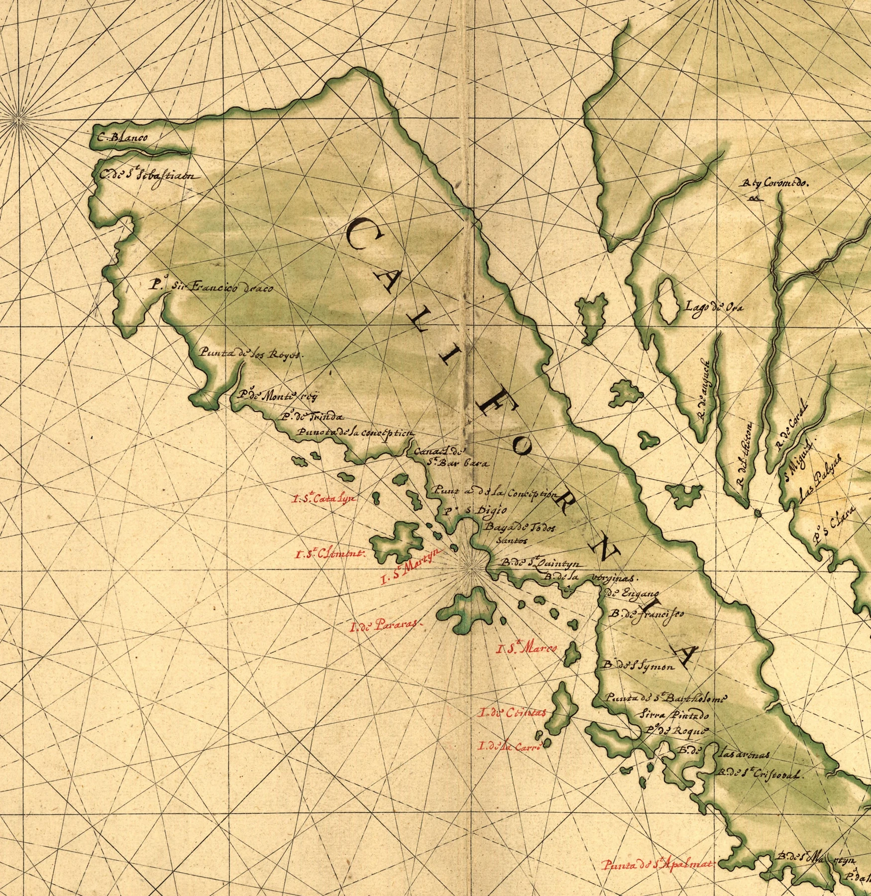

01 / Western North America
A real place, misdrawnCalifornia, detached
An island where a peninsula should be.

Look closely Follow the water across California’s northern edge. The gulf has become a passage to the Pacific.
What the map claims
This manuscript gives California a closed northern coast. It turns a real peninsula into a long island, separated from the mainland by a continuous sea passage. The mistake concerns the shape of the land, not the existence of California.
What changed
Kino’s overland journeys of 1698–1701 supplied evidence for a connection to the mainland. His map circulated in print in 1705, but island versions continued to be published. Correction travelled unevenly.
- c. 1650This manuscript closes the northern coastline.
- 1698–1701Kino investigates the land connection.
- 1705Kino’s map appears in print.
Sources & what we can verify
The current LOC record dates this sheet about 1650; older LOC exhibitions called it 1639. We follow the catalogue’s approximate date. The island tradition was never the only representation of California.
- Map
- Map of California shown as an island
- Collection
- Library of Congress · G3291.S12 coll .H3
- Image credit
- Public-domain historical map; LOC scan via Wikimedia Commons.